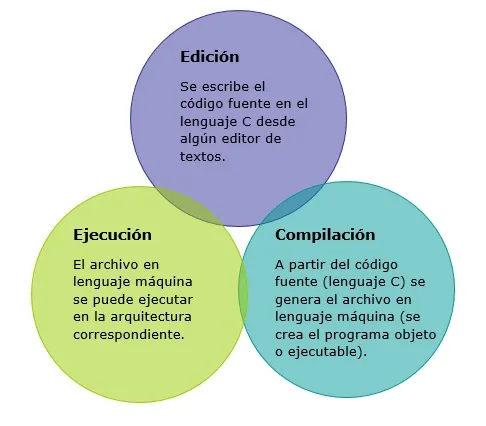
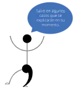

Los lenguajes de programación son lenguajes creados por el ser humano para poder comunicarse con las computadoras; así, podríamos decir que lenguaje de programación es el conjunto de símbolos y palabras que permiten al usuario de una computadora darle instrucciones y órdenes para que la computadora los ejecute.
C es un lenguaje de programación de propósito general que ofrece como ventajas economía de expresión, control de flujo y estructuras de datos y conjunto de operadores.
Es también, un lenguaje de propósito general basado en el paradigma estructurado.
El teorema del programa estructurado demostrado por Böhm-Jacopini, dicta que todo programa puede desarrollarse utilizando únicamente 3 instrucciones de control:
Secuencia, Selección, Iteración
Por otro lado, C es un lenguaje compilado, es decir, existe un programa (llamado compilador) que, a partir de un código en lenguaje C, genera un código objeto (ejecutable).

El lenguaje C está basado en el concepto de funciones. Un programa C es una colección de una o más funciones, en donde cada una tiene un nombre y una lista de argumentos. Una de estas funciones se llama main (principal). El programa siempre comenzará por la ejecución de la función main, la cual debe escribirse seguida de paréntesis de la siguiente manera: main()
Al momento de ejecutar un programa objeto (código binario), se ejecutarán únicamente las instrucciones que estén definidas dentro de la función main. La función main puede contener sentencias, estructuras de control y comentarios. Dentro de las sentencias se encuentran la declaración y/o asignación de variables, la realización de operaciones básicas y las llamadas a funciones.
Licencia GPL de GNU
El software que se utilizará en esta UAPA es libre, bajo la licencia GPL de GNU, es decir, se puede modificar y distribuir mientras se mantenga la licencia GPL.
